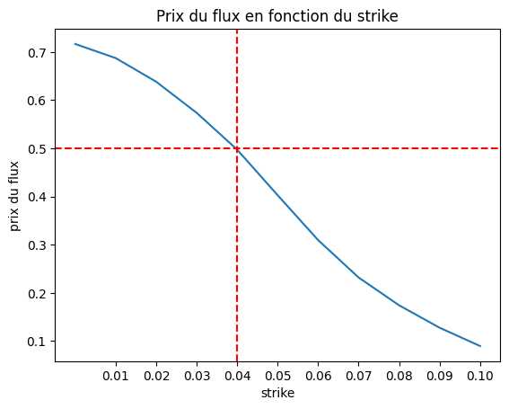
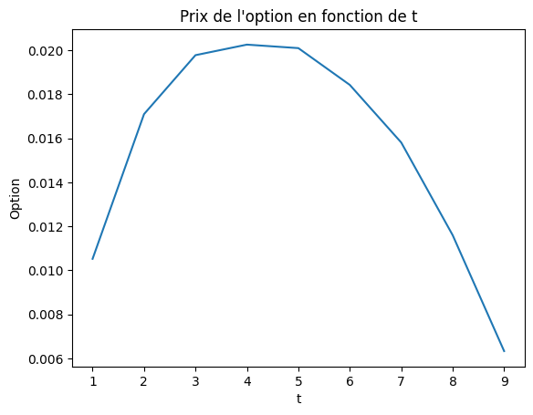
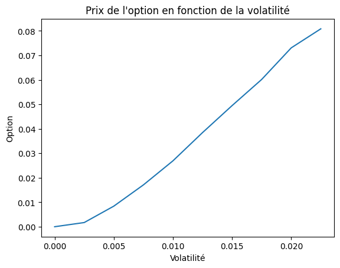
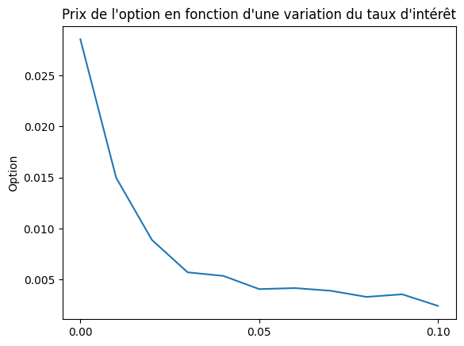

Lors de la valorisation d’une obligation, il est essentiel de considérer des éléments clés tels que le prix sale (dirty price) et le prix net (clean price), lesquels dépendent de facteurs variés incluant le taux d’intérêt, la maturité et le taux de coupon. Dans cette analyse, nous avons généré la courbe des taux spot en utilisant des obligations zéro coupon et évalué le prix d’une obligation sous l’hypothèse d’une courbe de taux déterministe. Par la suite, nous avons exploré un modèle simplifié de Hull et White, examiné les spécificités d’une obligation munie d’une clause de rappel et discuté des stratégies de couverture contre le risque de taux d’intérêt.
Keywords
Zero coupon, Obligations, Courbe spot
1 Introduction
Une obligation zéro coupon est une obligation dont les intérêts sont versés en totalité à l’échéance de l’emprunt après avoir capitalisé sur toute la période.Elle est mise à un prix inférieur à sa valeur nominale et remboursée à sa valeur nominale complète à l’échéance.Par exemple, une obligation de valeur nominale 1000€ et de maturité pourrait être mise à 680 €. Ce prix inférieur reflète le fait que l’investisseur ne recevra pas d’intérêt annuel. À l’échéance, l’investisseur recevra 1000 €. Il est donc important de savoir calculer le prix d’une obligation zéro. Nous noterons B(t,T) le prix d’une obligation zéro coupon de maturité T à l’instant t. Il a plusieurs applications : - Il va permettre de construire la courbe de taux zéro coupon. - Il joue le rôle de facteur d’actualisation. - Il est aussi utilisé dans la modélisation du modèle de Hull et White.
La première section de ce document se focalisera sur l’élaboration de la courbe relative aux obligations zéro coupon, à partir de laquelle nous déduirons aisément la courbe des taux zéro coupon. Dans la 2nde partie, nous allons valoriser une obligation. Dans la seconde partie, nous procéderons à la valorisation d’une obligation, en mettant l’accent sur le concept de dirty price et de clean price. Ensuite nous étudier la sensibilité du prix d’une obligation en fonction du taux d’intérêt et du spread de crédit. Enfin, la troisième partie sera consacrée à l’étude d’un modèle simple de Hull et White.
1.1 Préparation des données et Calcul de la courbe des taux de zéro coupon.
L’objectif de cette partie est de construire la courbe spot des taux zéro coupon \(r_T\) à partir des données de marché. Il est donné par la formule suivante : \[r_T = -\frac{1}{T} \ln B(0,T)\]
La calibration de la courbe de taux se fait par bootstrapping à partir des cotations du marché : - CT = cash rates (les cash flow) : Ici c’est la courbe de taux qui est constatée sur le marché interbancaire - FRA = Forward Rate Agreement (les taux forward) - SWAP = Interest Rate Swap (les taux swap)
Code
#!pip install openpyxlimport numpy as npnp.random.seed(42)import pandas as pdfrom scipy import interpolate#importer un fichier xlsx : la première feuille#courses = pd.read_csv('courses.csv')taux_BBG = pd.read_excel('Taux_BBG.xlsx', sheet_name='Feuil1')
1.1.0.1 Création d’une ligne qui sera la première ligne de notre fichier
Code
# calcul du Mid qui est la moyenne entre le bid et l'asknouvelle_ligne = pd.DataFrame({'Term': [5], # Supposons que vous voulez ajouter une période de 5 mois au début'Unit': ['MO'],'Ticker': ['EUR005M'], # Supposons un ticker pour la nouvelle ligne'Bid': [3.9], # Exemple de valeur Bid'Ask': [3.9], # Exemple de valeur Ask'Spread': [None],'Bid Spr Val': [0],'Ask Spr Val': [0],'Final Bid Rate': [None],'Final Ask Rate': [None],'Rate Type': [None],'Daycount': [None],'Freq': [None]}, index=[0])df = pd.concat([nouvelle_ligne, taux_BBG], ignore_index=True)
1.1.1 Calcul du Mid qui sera considéré comme les taux de prêt interbancaire.
Pour calculer la courbe de taux à court terme, nous avons besoin du Mid qui est la moyenne entre le bid et l’ask. Nous nous le considérons comme proxy des taux interbancaires par exemple le LIBOR. Il était important de considérer la liquidité de l’instrument. Les écarts plus larges entre le bid et l’ask indiquent une liquidité plus faible.Ce qui pourrait influencer l’approximation du Libor.Pour des raisons de simplicité, nous avons, nous n’avons pas pris en compte la liquidité des instruments.
Code
df['Mid'] = (df['Bid'] + df['Ask']) /2
Code
# Initialisation des colonnesdf['T'] =0df['T1'] =0df['T2'] =0df['B(0,T)'] =0
1.1.1.1 Le prix d’une obligation zéro coupon à l’instant \(t=0\) qui paie 1 unité monétaire à l’instant 0 est de 1.
Code
# calcule du premier élement de B(0,T)df['B(0,T)'].astype(int)[0] =1
1.1.2 La courbe spot à partir des cash rates c’est-à-dire à court terme.
Sa formule est donnée par :
\[B(0,T) = \frac{1}{(1+\delta*L )}\]
Où \(L\) est le taux de prêt interbancaire(Libor par exemple) et \(\delta\) est la fraction de l’année.
Code
# Conversion des termes en annéesdf['T2'] = df['Term'].astype(int)/12
1.1.3 Calcul de T1 afin de calculer la courbe spot à partir des taux forward.
Dans la partie ci-dessus, nous avons calculé la courbe spot à partir des cash rates. Nous allons maintenant calculer la courbe spot à partir des taux forward et les taux swap. Nous pourrons ainsi prolonger la courbe spot jusqu’à 50 ans par des interpolations linéaires.
1.1.5 Création d’un dataframe pour le prolongement de la courbe de spot sur 50 ans.
Code
# creation d'un dataframe qui va prolonger le dataframe data_month jusqu'à 50 ansimport pandas as pdNombre_year =51terms = [0,6, 7, 8, 9, 10, 11, 12, 15, 18] +list(range(2,Nombre_year))units = ['MO'if i <10else'YR'for i inrange(len(terms))]data_50 = pd.DataFrame({'Term': terms,'Unit': units})data_final = pd.merge(data_50, df, how='left', on=['Term', 'Unit'])data_final #data_final['B(0,T)'][0] =1data_final.loc[0, 'B(0,T)'] =1#data_final['T'][0] = 0data_final.loc[0, 'T'] =0data_final[["Term","Unit","Mid","T","T1","T2","B(0,T)"]].head(2)
Term
Unit
Mid
T
T1
T2
B(0,T)
0
0
MO
NaN
0.0
NaN
NaN
1.0000
1
6
MO
3.832
0.5
0.0
0.5
0.9812
1.1.6 Interpolation des valeurs de Mid qui ont des valeurs manquantes.
Nous avons utilisé le Mid comme proxy des taux interbancaires. Il représente la moyenne arithmétique entre le “ask” et le “bid”.Nous avons utilisé la méthode de l’interpolation linéaire pour remplir les valeurs manquantes.
Code
from scipy.interpolate import interp1dnan_indices = data_final['Mid'][data_final['Mid'].isna()].indexvalid_data = data_final.dropna(subset=['Mid'])function = interp1d(valid_data.index, valid_data['Mid'], fill_value='extrapolate')for nan_index in nan_indices: data_final.at[nan_index, 'Mid'] = function(nan_index)
Le code ci-dessous va permettre de prolonger la courbe des obligations spot jusqu’à 50 ans. Nous avons ainsi propagé des valeurs de la colonne T jusqu’à 50 ans.
1.1.7 Courbe d’obligation spot moyen et long terme
En moyen terme, la courbe spot est donnée à partir des taux forward par la formule suivante:
\[B(0,T+\delta) = \frac{B(0,T)}{(1+\delta*f )}\]
où \(f\) est le taux forward et \(\delta\) est la fraction de l’année. Un prêt forward est un engagement entre 2 parties de vendre ou d’acheter un instrument financier à une date ultérieure et à un prix déterminé à l’avance.
En long terme, la courbe spot est donnée à partir des taux swap.Un contrat swap est un contrat d’échange de flux financiers entre deux parties. Un swap de taux est utilisé pour échanger des taux d’intérêt entre deux parties. La courbe spot est donnée par la formule suivante:
import pandas as pdimport numpy as npimport pandas as pdimport pandas as pddef calculate_B0T(df):""" Calculate B(0,T) by interpolating B(0,T1) based on given B(0,T) values in a DataFrame. Parameters: - df: DataFrame containing columns 'T', 'B(0,T)', 'T1', and 'Mid'. Returns: - Updated DataFrame with interpolated 'B(0,T1)' and recalculated 'B(0,T)'. """ df['PVBP'] =0for i, row in df.iterrows():if i in [0,1]:continue t1 = row['T1']if row['Unit']=="MO":## On vérifie que l'interpolation est possibletry:# On cherche les valeurs les plus proches de t1 dans la colonne T valid_points = df.sort_values('T') interp = interpolate.interp1d(valid_points['T'], valid_points['B(0,T)'], kind='linear', fill_value='extrapolate') b1 = interp(t1)# Update the DataFrame with the interpolated value df.at[i, 'B(0,T1)'] = b1 # Use 'at' for scalar value updates# Calcule du forward rate df.at[i, 'B(0,T)'] = b1 / (1+0.5* row['Mid'] /100)# Initialisation de la PVBP df.at[i, 'PVBP'] =0exceptValueError:print(f"Impossible d'interpoler la valeur à l'index {i} avec t1 = {t1}")continueelse:# Calcul de PVBP et calcul des swaps df.at[i, 'PVBP'] = df.at[i-1, 'B(0,T1)'] + df.at[i-1, 'PVBP'] df.at[i, 'B(0,T)'] = (1- row['Mid']/100* df.at[i, 'PVBP'] )/(1+row['Mid']/100) df.at[i, 'B(0,T1)'] = df.at[i, 'B(0,T)']return dfessai = calculate_B0T(data_final)
La fonction ci-dessus nous a permis de terminer la construction de notre couple. Maintenant, nous pouvons passer à une représentation graphique de la courbe spot.
1.1.8 Construction de la courbe de taux zéro coupon spot
La courbe de taux zéro coupon spot est donnée par la formule suivante:
\[r_T = -\frac{1}{T} \ln B(0,T)\]
Code
essai['RT'] =-np.log(essai['B(0,T)'])/essai['T']#plot the cureplt.plot(essai['T'], essai['RT'])plt.xlabel('Maturité en années')plt.ylabel('RT')plt.title('Courbe de taux spot sur 50 ans')plt.show()
2 Valorisation d’une obligation
Dans cette partie, nous allons valoriser une obligation et nous allons mettre en exergue les notions de Dirty price et de Clean Price. Le Dirty price d’une obligation, comprend les intérêts courus sur l’obligation entre le dernier paiement du coupon et la date de règlement. Autrement dit, si un investisseur souhaite acheter une obligation, au prix sale, il devra payer le prix propre, plus les intérêts courus. Le Clean price, quant à lui est la valeur marchande riait de l’obligation, sans aucun intérêt couru. La continuité de cette coupe montre qu’elle a un intérêt économique et permet de se couvrir des risques.
Le prix d’une obligation zéro-coupon(dirty price) est donné par la formule suivante:
Où \(c\) est le coupon, \(B(t,i)\) est le prix d’une obligation zéro-coupon à l’instant t et de maturité i, \(PS(i)\) est le principal de l’obligation et \(\mathbf{1}_{(t < i)}\) est la fonction indicatrice qui vaut 1 si t < i et 0 sinon. \(PS(i)=\exp(-s \cdot (i-t))\) où \(s\) est le spread de crédit, représente la fonction de survie de l’obligation.
On supposera que la courbe de taux est déterministe: Dans ce B(t,T) est donné par la formule suivante: \[B(t,T) =\frac{B(0,T)}{B(0,t)}\]
Le prix du clean price est obtenu en soustrayant les intérêts courus à chaque date de paiement du coupon au dirty price. Il est donné par la formule suivante:
\[\text{Clean Price} = \text{Dirty Price} - c \cdot \left(t - \lfloor t \rfloor\right)\] Où \(\lfloor t \rfloor\) est la partie entière de t.
Code
def prix_obligation(t, c, s,T, data=essai):""" Calcule le prix d'une obligation. Parameters: - t: Taux d'intérêt sans risque - c: Coupon de l'obligation - s:spread - T: Maturité de l'obligation Returns: - Prix de l'obligation """ f_inte = interpolate.interp1d(essai['T'], essai['B(0,T)']) pt =0for i inrange(1,T+1):if t < i: B_t_i = f_inte(i)/f_inte(t) ps_i = np.exp(-s*(i-t)) pt += c *B_t_i * ps_iif t<T: B_t_T = f_inte(T)/f_inte(t) ps_T = np.exp(-s*(T-t)) pt += B_t_T * ps_T return ptdef clean_price(t, c, s,T, data=essai):""" Calcule le prix d'une obligation. Parameters: - t: Taux d'intérêt sans risque - c: Coupon de l'obligation - s:spread - T: Maturité de l'obligation Returns: - Prix de l'obligation """ f_inte = interpolate.interp1d(essai['T'], essai['B(0,T)']) pt =0for i inrange(1,T+1):if t < i: B_t_i = f_inte(i)/f_inte(t) ps_i = np.exp(-s*(i-t)) pt += c *B_t_i * ps_i if t<T: B_t_T = f_inte(T)/f_inte(t) ps_T = np.exp(-s*(T-t)) pt += B_t_T * ps_T return pt - c*(t-np.floor(t))def prix_obligation_shift(t, c, s,T, h,essai):""" Calcule le prix d'une obligation. Parameters: - t: Taux d'intérêt sans risque - c: Coupon de l'obligation - s:spread - T: Maturité de l'obligation Returns: - Prix de l'obligation """ f_inte = interpolate.interp1d(essai['T'], essai['B(0,T)']) pt =0for i inrange(1,T+1):if t < i: B_t_i = (f_inte(i)/f_inte(t))*(np.exp(-h*(i-t))) ps_i = np.exp(-s*(i-t)) pt += c *B_t_i * ps_iif t<T: B_t_T = (f_inte(T)/f_inte(t))*(np.exp(-h*(T-t))) ps_T = np.exp(-s*(T-t)) pt += B_t_T * ps_T return ptdef prix_obligation_spread(t, c, s,T, h,essai):""" Calcule le prix d'une obligation. Parameters: - t: Taux d'intérêt sans risque - c: Coupon de l'obligation - s:spread - T: Maturité de l'obligation Returns: - Prix de l'obligation """ f_inte = interpolate.interp1d(essai['T'], essai['B(0,T)']) pt =0for i inrange(1,T+1):if t < i: B_t_i = (f_inte(i)/f_inte(t))*(np.exp(-h*(i-t))) ps_i = np.exp(-(s+h)*(i-t)) pt += c *B_t_i * ps_iif t<T: B_t_T = (f_inte(T)/f_inte(t))*(np.exp(-h*(T-t))) ps_T = np.exp(-(s+h)*(T-t)) pt += B_t_T * ps_Treturn pt
Code
# Tracer pt en fonction de t pour c=0.03, s=0.01 et T=10 avec un pas de 0.1coupon =0.03spread =0.01maturite =10plage_t = np.arange(0, 10, 0.1)plage_pt = [prix_obligation(t, c=coupon, s=spread, T=maturite, data=essai) for t in plage_t]plage_clean = [clean_price(t, c=coupon, s=spread, T=maturite, data=essai) for t in plage_t]plt.plot(plage_t, plage_pt, label='Dirty Price')plt.plot(plage_t, plage_clean, label='Clean Price')plt.xlabel('t')plt.ylabel('pt')plt.title('Prix de l\'obligation en fonction de t')plt.legend()plt.show()
Sur la courbe ci-dessus, nous avons représenté le Dirty price en bleu et le clean price en orange. Nous remarquons que sur le Dirty price, il y a des décrochages, des discontinuités qui correspondent à l’intégration de coupons. Par contre, le clean prize qui correspond au Dirty price auquel on a retiré le coupon couru est continu et peut permettre une analyse de risques.
2.1 Sensibilité du prix d’une obligation en fonction du taux d’intérêt et du spread de crédit
Cette fois-ci, nous allons étudier la sensibilité du prix d’obligations en fonction du taux d’intérêt et le spread de crédit.
Code
# Tracer pt en fonction de t pour c=0.03, s=0.01 et T=10 avec un pas de 0.1temps_initial =0import numpy as npimport matplotlib.pyplot as plt# Supposons que vos fonctions et variables sont déjà définies correctementfig, ax = plt.subplots(1,2, figsize=(8,4)) # Crée une figure et deux subplots (axes)plage_h = np.arange(0, 1, 0.001)# Supposons que prix_obligation_spread soit votre fonction personnaliséeplage_pt_h = [prix_obligation_spread(temps_initial,coupon, spread, maturite, h, essai) for h in plage_h]plage_pt__h = [prix_obligation_spread(temps_initial,coupon, spread, maturite, -h, essai) for h in plage_h]# Utiliser les méthodes de l'objet Axes pour tracerax[0].plot(plage_h, plage_pt_h,color='green')ax[1].plot(plage_h, plage_pt__h,color='green')ax[0].set_xlabel('h')ax[0].set_ylabel('p0')ax[1].set_xlabel('h')ax[1].set_ylabel('p0')ax[0].set_title('Sensibilité au taux pour h positifs')ax[1].set_title('Sensibilité au taux pour h négatifs')plt.tight_layout() # Ajuste automatiquement le layout pour éviter le chevauchementplt.show()
Code
# Tracer pt en fonction de t pour c=0.03, s=0.01 et T=10 avec un pas de 0.1temp_initial =0fig,ax = plt.subplots(1,2, figsize=(8,4))plage_h = np.arange(0, 1, 0.001)plage_pt_h = [prix_obligation_spread(temp_initial, coupon, spread, maturite, h, essai) for h in plage_h]plage__pt_h = [prix_obligation_spread(temp_initial, coupon, spread, maturite, -h, essai) for h in plage_h]ax[0].plot(plage_h, plage_pt_h,color='r')ax[1].plot(plage_h, plage__pt_h,color='r')ax[0].set_xlabel('h')ax[0].set_ylabel('p0')ax[1].set_xlabel('h')ax[1].set_ylabel('p0')ax[0].set_title('Sensibilité au spread pour h positifs')ax[1].set_title('Sensibilité au spread pour h négatifs')plt.tight_layout() # Ajuste automatiquement le layout pour éviter le chevauchementplt.show()
Il en ressort des graphiques ci-dessus qu’une augmentation(diminution) du taux d’intérêt ou du spread de crédit conduit à une augmentation(diminution) du prix de l’obligation zéro coupon.
3 Calcul de la duration à t =0 avec h = 0.00001
La formule de la duration est donnée par la formule ci-après:
\[D = -\frac{1}{P} \frac{P_h - P}{h}\]
La duration exprime comment un portefeuille est sensible aux variations des taux d’intérêts. Un portefeuille avec une duration de 5 signifie que si un peu d’intérêt augmente de 1% la valeur du portefeuille va diminuer de 5%. La duration de notre portefeuille est de 8,75, cela signifie que si le taux d’intérêt augmente de 1%, la valeur de notre portefeuille va diminuer de 8,75%.
Code
# Calcul de la durationh =0.0001P_h = prix_obligation_shift(temp_initial, coupon, spread, maturite, h, essai)P = prix_obligation(temp_initial, coupon, spread, maturite, essai)D =-1/P * (P_h - P)/hprint(f"La duration de l'obligation est {D:.2f}")
La duration de l'obligation est 8.75
3.1 Valorisation d’un produit Exotique avec Hull White
Dans cette partie, nous allons dans un premier temps définir le prix de n’importe quel zéro-coupon c’est-à-dire trouver une forme analytique de B(t,T)-qui est le prix d’une obligation sans coupon définie par la valeur en t d’une unité monétaire payée à l’échéance. Ensuite, nous allons nous hedger contre le risque de taux d’intérêt en utilisant les caplets. Un caplet est une option d’achat sur un taux d’intérêt. Il est utilisé pour se protéger contre une hausse des taux d’intérêt. Nous allons calibrer sa volatilité. Enfin, nous utiliserons cette volatilité et des simulations de Monte Carlo pour calibrer les niveaux de strike d’un caplet pour se protéger de la hausse d’un Libor. Nous savons par exemple que si le Libor est supérieur au strike, l’option est exercée.
3.1.1 Calcul de B(t,T) avec Hull White
Le modèle de Hull et White est une extension du modèle de Vasicek. Sous le modèle de Hull et White, le taux court est donné par la formule suivante: \[dr_t=\lambda (\theta - r_t)dt+\sigma dW_t\]
Nous allons étudier la partie simplifiée avec \(\lambda=0\)
Montrer tout d’abord que : La formule pour calculer (B(t,T)) est donnée par :
Black est la formule de Black Scholes qui est utilisée pour calculer le prix d’une option européenne et la vol_implicite est la volatilité implicite qui sera considérée égale à 25%.
Calibrer \(\sigma\), revient à déterminer la volatilité qui fait correspondre le prix du caplet du marché au prix du caplet dans le modèle de Hull et White. Nous utiliserons pour ce fait la méthode de Newton.
\(\sigma\) est la volatilité de Hull et White que nous avons calibré précédemment. Nous remarquons que, calibrer L revient à calibrer X qui est donnée par la formule suivante:
\[dX_t = \sigma^2 t \, dt + \sigma dW_t\] Nous aurons pu calibrer X en prenant des pas très petits, comme dans le graphique ci-dessous, mais nous avons décidé de calibrer X avec des pas de 1 :
\[X_{i+1} = X_i + \sigma^2 (i+0.5) + \sigma Z\]
Où Z est une variable aléatoire suivant une loi normale centrée réduite.
Code
import numpy as npimport matplotlib.pyplot as plt# Paramètres de simulationT =10# Temps finalN =1000# Nombre de pasdt = T/N # Pas de tempssigma = sigma_calibre # Volatilité# Initialisationt = np.linspace(0, T, N+1)X = np.zeros(N+1)Z = np.random.normal(0, 1, N) # Génère N réalisations de N(0,1)# Simulation par différences finiesfor i inrange(N): X[i+1] = X[i] + sigma**2* t[i] * dt + sigma * np.sqrt(dt) * Z[i]# Affichageplt.plot(t, X)plt.xlabel('Temps')plt.ylabel('$X_t$')plt.title('Simulation de $X_t$ par différences finies')plt.show()
Code
def simulation_monte_carlo(delta,sigma,essai,M,alpha):"""La fonction simule le prix d'un caplet par la méthode de Monte Carlo Args: delta (float): Fréquence de paiement sigma (float): Volatilité essai (dataframe): ce dataframe contient les données des zéro coupon M (float): Nombre de simulations alpha (float): Taux de référence Returns: float: prix du caplet """ mean_price = []for i inrange(M): Z = np.random.normal(0, 1, 10) # Génère N réalisations de N(0,1) X = np.zeros(11) f_interpolation = interpolate.interp1d(essai['T'], essai['B(0,T)']) L_i_iplus1 = np.zeros(10)for j inrange(0,10): X[j+1] = X[j] + sigma**2*(j+0.5) + sigma*Z[j] j_values = np.arange(1, 11) B_0_i = f_interpolation(j_values) B_0_i_plus_1 = f_interpolation(j_values +1) exp_X_i_plus_sigma = np.exp(X[1:] + sigma**2*0.5*j_values) L_i_iplus1 = ((B_0_i / B_0_i_plus_1) * exp_X_i_plus_sigma -1) * (1/ delta) meanl = np.mean(L_i_iplus1>alpha) mean_price.append(meanl) B_0_T = f_interpolation(10)return np.mean(mean_price)*B_0_T
Code
delta =0.5sigma = sigma_calibredata = essaiM =10000alpha =0.03simulation_monte_carlo(delta,sigma,data,M,alpha)print(f"Pour un seuil de {alpha}, le prix du flux résultant de la simulation Monte Carlo\ est : {simulation_monte_carlo(delta, sigma, data, M, alpha):.2f}")
Pour un seuil de 0.03, le prix du flux résultant de la simulation Monte Carlo est : 0.58
3.1.3.1 variation du prix du flux en fonction du seuil alpha
Nous avons représenté ci-dessous le prix du flux en fonction de différents niveaux de seuil alpha. Il est ressort que le prix est décroissant en fonction du seuil alpha. Le produit est donc plus cher lorsque le seuil alpha est plus bas -inférieur à 4% et plus cher lorsque le strile est plus élevé -supérieur à 4%.
Cette analyse peut permettre de développer des stratégies d’investissement pour les investisseurs et les émetteurs.
Code
plage_alpha = np.arange(0, 0.11, 0.01)plage_prix = [simulation_monte_carlo(delta,sigma,data,M,alpha) for alpha in plage_alpha]plt.plot(plage_alpha, plage_prix)plt.xlabel('strike')plt.ylabel('prix du flux')plt.title('Prix du flux en fonction du strike')plt.axhline(y=0.5, color='r', linestyle='--')plt.axvline(x=0.04, color='r', linestyle='--')plt.xticks([0.01,0.02,0.03,0.04,0.05,0.06,0.07,0.08,0.09,0.1])plt.show()

3.2 Valorisation d’une obligation avec clause de rappel avec Hull White.
La valorisation d’une obligation avec une clause de rappel implique l’évaluation d’une obligation qui donne à l’émetteur le droit, mais pas l’obligation de rembourser le principal de l’obligation avant l’échéance à un prix prédéterminé, appelé prix de rappel, cette caractéristique offre à l’émetteur de l’obligation, la flexibilité de refinancer sa dette à un coût inférieur si les taux d’intérêt du marché baissent.
Dans cette partie, avec un exemple simple, nous allons valoriser le prix d’une option sur une obligation avec clause de rappel. Nous emploierons pour cela des simulations de Monte-Carlo afin de déterminer le prix de l’obligation avec clause de rappel. Par la suite, nous comparerons cette obligation à une obligation classique sans clause de rappel, afin de déterminer le prix d’une option de rappel elle-même. Enfin, nous procéderons à diverses analyses de sensibilité pour évaluer l’impact de différents facteurs sur la valorisation.
si on pose \(X_0 = 0\), nous avons : En intégrant l’équation différentielle stochastique pour \(X_t\), nous obtenons la formule suivante: \[X_t = \sigma^2 \frac{t^2}{2} + \sigma W_t\]
Comme \(W_t\) est un mouvement brownien, nous avons que \(W_t\) est une variable aléatoire suivant une loi normale centrée de variance t. donc si on pose \(U =\sqrt{t}W_t\), nous avons que U est une variable aléatoire suivant une loi normale centrée de variance 1. Ainsi on trouve que notre modèle de Hull et White s’écrira sous la forme suivante:
Ainsi nous pouvons calibrer par monte-Carlo le prix de l’obligation avec clause de rappel. Dans un prix temps la fonction de valorisation de l’obligation est donnée par la formule suivante: \[P(t, T, U, \sigma) = \sum_{i=1}^{T} \left[ c \cdot B(t, i, U, \sigma) \cdot PS(i) \cdot \mathbf{1}_{(t < i)} \right] + B(t, T, U, \sigma) \cdot PS(T) \cdot \mathbf{1}_{(t < T)}\]
avec \(PS(t)\) la fonction de survie qui est donnée par la formule suivante: \[PS(i)=\exp(-s \cdot(i-t))\]
Le prix de l’obligation avec clause de rappel est donné par la formule suivante:
comment on écrire le minimum de deux valeurs dans une fonction mathématique en latex?
Nous avons implémenté sur prix le code du ci-dessous.
Code
import numpy as npdef B(t, T, U, sigma,data,h_taux,h_sigma):""" Calcule la valeur de B(t, T, U, sigma) selon la formule spécifiée. Paramètres: - t : Temps actuel. - T : Temps final. - U : Variable aléatoire ou paramètre spécifique au modèle. - sigma : Volatilité. Retourne: - La valeur calculée de B(t, T, U, sigma). """ f_inte = interpolate.interp1d(data['T'], data['B(0,T)']) B_0_T = f_inte(T)*np.exp(-h_taux*T) B_0_t = f_inte(t)*np.exp(-h_taux*t) sigma+=h_sigma exp_part = np.exp(-1* (T - t) * (0.5* sigma**2* t**2+ sigma * np.sqrt(t) * U) -0.5* (T - t)**2* sigma**2* t)return (B_0_T / B_0_t) * exp_partdef prix_obligation_Hull_White(c,s,t,T,U,sigma,data,h_taux,h_sigma):""" Calcule le prix d'une obligation. paramètres: - t: Taux d'intérêt sans risque - c: Coupon de l'obligation - s:spread - T: Maturité de l'obligation - U : Variable aléatoire ou paramètre spécifique au modèle. - sigma : Volatilité. - data : dataframe contenant les données Returns: - Prix de l'obligation """ prix =0for i inrange(1,T+1):if t<i: ps_i = np.exp(-s*(i-t)) b_t_i = B(t,i,U,sigma,data,h_taux,h_sigma) prix += c*b_t_i*ps_iif t<T: ps_T = np.exp(-s*(T-t)) b_t_T = B(t,T,U,sigma,data,h_taux,h_sigma) prix += b_t_T*ps_Treturn prix # simulation des prixdef simulation_prix(c,s,t,T,sigma,data,N,h_taux,h_sigma): liste_prix = []for i inrange(N): U = np.random.normal(0,1) prix = prix_obligation_Hull_White(c,s,t,T,U,sigma,data,h_taux,h_sigma) liste_prix.append(prix) prix_ajuste = np.minimum(liste_prix,1)return np.mean(prix_ajuste)
Code
Nombre_simulations =10000temps_exercice =5sigma =0.01prix_c =simulation_prix(c=coupon,s=spread,t=temps_exercice,T=maturite, sigma=sigma,data=essai,N=Nombre_simulations, h_taux=0.01,h_sigma=0.01)print(f"Le prix de l'obligation de rappel est de {prix_c:.2f}")
Le prix de l'obligation de rappel est de 0.87
3.2.2 Calcul du prix de l’option de rappel
Nous avons initialement estimé la valeur d’une obligation zéro-coupon, sa clause de rappel Par la suite, la valorisation d’une obligation incorporant une clause de rappel a été réalisée.Afin de quantifier le coût de l’option de rappel, nous procéderons à la soustraction des 2 prix précédemment obtenus, puis à l’actualisation du résultat à la date d’exercices. Le prix de l’option de rappel est donné par la formule suivante:
Nous avons implémenté le prix de cette option dans le code ci-dessous.
Code
# Créeons une fonction qui calcule le prix d'une optiondef calcule_option(c,s,t,T,sigma,data,N,h_taux=0,h_sigma=0): fonction_interpolation = interpolate.interp1d(data['T'], data['B(0,T)']) B_0_t = fonction_interpolation(t) prix_c =simulation_prix(c,s,t,T,sigma,data,N,h_taux,h_sigma) prix = prix_obligation_shift(t, c, s,T, h_taux,data) option = B_0_t * (prix - prix_c)return optionoption = calcule_option(c=coupon,s=spread,t=temps_exercice,T=maturite, sigma=sigma,data=essai,N=Nombre_simulations, h_taux=0.01,h_sigma=0.01)print(f"Le prix de l'option est {option}")
Le prix de l'option est 0.05313592167256735
Code
plage_t=np.arange(1,10)plage_option = [calcule_option(c=coupon,s=spread,t=t,T=maturite,sigma=sigma_calibre,data=essai,N=Nombre_simulations) for t in plage_t]plt.plot(plage_t, plage_option)plt.xlabel('t')plt.ylabel('Option')plt.title('Prix de l\'option en fonction de t')plt.show()

Le graphique ci-dessus présente le prix de l’option du rappel en fonction du temps. Nous remarquons que si l’émetteur exerce son option prématurément, il devra payer un prix plus élevé. Cependant, lorsqu’on se rapproche de la maturité de l’obligation, le prix de l’option de rappel diminue.
3.2.3 Sensibilité du prix de l’option de rappel en fonction de la date d’exercie, de la volatilité et du taux d’intérêt.
3.2.3.1 Sensibilité du prix de l’option de rappel en fonction de la volatilité.
Le code ci-dessous représente la sensibilité du prix de l’option en fonction de la volatilité. Comme nous pouvons le constater, une augmentation de la volatilité conduit à une augmentation du prix de l’option de rappel.
Code
# Je veux une plage de volatilité {0%,0.25%,0.5%,...,5%}pas =0.25/100plage_sigma = np.arange(0, 10* pas, pas)plage_option_sigma = [calcule_option(c=0.03,s=0.01,t=5,T=10,sigma=sigma,data=essai,N=10000) for sigma in plage_sigma]plt.plot(plage_sigma, plage_option_sigma)plt.xlabel('Volatilité')plt.ylabel('Option')plt.title('Prix de l\'option en fonction de la volatilité')plt.show()

3.2.3.2 Sensibilité du prix de l’option de rappel en fonction du taux d’intérêt.
Le code ci-dessous représente la sensibilité du prix de l’option en fonction du taux d’intérêt. Comme nous pouvons le constater, une augmentation infinitésimale du taux d’intérêt conduit à une diminution du prix de l’option de rappel.
Code
plage_h_taux = np.arange(0, 0.11, 0.01)plage_option_h_taux = [calcule_option(c=0.03,s=0.01,t=5,T=10,sigma=0.01,data=essai,N=10000,h_taux=h_taux) for h_taux in plage_h_taux]plt.plot(plage_h_taux, plage_option_h_taux)plt.ylabel('Option')plt.title("Prix de l'option en fonction d'une variation du taux d'intérêt")plt.xticks([0,0.05,0.1])plt.show()

3.2.3.3 Sensibilité du prix de l’option : Delta et Vega.
Le delta est la sensibilité du prix de l’option par rapport au sous-jacent qui est ici le taux d’intérêt. Il est donné par la formule suivante:
\[\Delta =\frac{option_{h}-option}{h}\]
Où \(option_{h}\) est le prix de l’option avec un taux d’intérêt augmenté de h.
Il peut aussi être utilisé pour se couvrir contre le risque de taux d’intérêt.
Le Vega est la sensibilité du prix de l’option par rapport à la volatilité. Il est donné par la formule suivante:
# Calcul des Vegah =0.0001option_haut = calcule_option(c=coupon,s=spread,t=temps_exercice,T=maturite, sigma=sigma,data=essai,N=Nombre_simulations, h_taux=0,h_sigma=h)option_bas = calcule_option(c=coupon,s=spread,t=temps_exercice,T=maturite, sigma=sigma,data=essai,N=Nombre_simulations, h_taux=0,h_sigma=0)vega = (option_haut - option_bas) / hprint(f"Le vega de l'option est {vega:.2f}")
Le vega de l'option est -16.03
4 Conclusion
Dans ce document, l’accent a été mis sur la valorisation des obligations. Initialement, nous avons élaboré une courbe d’obligation zéro-coupon simplifiée, à partir de laquelle nous avons pu extrapoler la courbe des taux zéro-coupon. Nous avons procédé sous l’hypothèse d’une courbe de taux déterministe, ce qui a facilité l’examen des concepts de prix sale (Dirty Price) et de prix propre (Clean Price), chacun présentant ses propres avantages et inconvénients. Par exemple, le prix propre est souvent privilégié dans l’analyse des risques. Nous avons également exploré comment le prix des obligations varie en fonction des changements de taux et de spread, constatant que le prix d’une obligation tend à augmenter avec le taux d’intérêt et le spread. Nous avons observé une duration de 8%, indiquant qu’une hausse de 1% des taux d’intérêt entraînerait une baisse de 8% de la valeur de l’obligation. Nous avons également utilisé un modèle simplifié de Hull et White pour valoriser une option de caplet et une option avec clause de rappel.
![]()